Genel Bilgiler
Dolgu istinat duvarının tanımı, dolgu kesitinin (parametrik veya vektörel) uygulanmasıyla başlar: eğer bu kesitte gereken dolgu yüksekliği öngörülen değeri aşarsa, tanımlanan kesit yerine burada belirtilen parametrelere göre bir duvar inşa edilir.
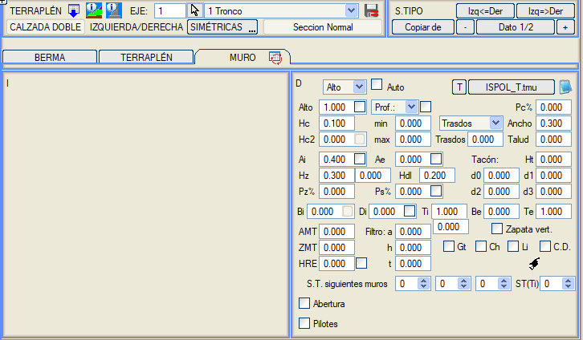
Aşağıdaki simgeye tıklandığında  eski duvar menüsüne erişilir: eski duvar menüsüne erişilir:
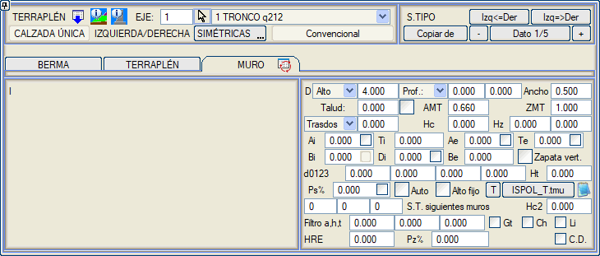
Kullanıcının tanımlayabileceği parametreler şunlardır:
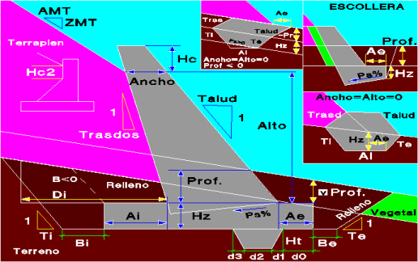
Yükseklik/Kot/YDK
|
Duvar yüksekliği |
Duvar yüksekliğini tanımlamak için üç seçenek vardır:
- Yükseklik: Duvarın yüksekliği.
- Kot: Sabit kotlu duvar.
- Y.D.K.: Sabit kotlu yeşil duvar (Yeşil Duvar Kotu).
|
Derinlik
|
Duvarın derinliği
|
Bu, duvar geometrisini tanımlamak için varsayılan seçenektir.
İki değer girmek için iki metin kutusu vardır: minimum ve maksimum derinlik. Maksimum derinliğe minimum derinlikten daha büyük bir değer girilirse, program duvar taban kotunun boyuna yönde sabit kalması için en uygun derinliği belirler. Böylece, duvarın başlangıç KM'sinde eğim pozitifse minimum derinlik, negatifse maksimum derinlik alınır.
Metin kutusunun yanındaki kutucuk işaretlenirse, duvarın derinliği pabucun dış kenarından ölçülür (şemaya bakınız).
Derinlik, varsayılan olarak doğal araziye göre referans alınır, ancak açılır kutudan seçilerek kaya horizonlarından birine göre de tanımlanabilir. Eğer kesitin başlangıç noktasının kotu kaya kotunun altındaysa, derinlik bu noktadan itibaren ölçülür.
Eğer Yatay Mes. seçilirse, program duvarın derinliğini, min. kutusuna (Yatay Mes. altında) girilen mesafenin pabuç tabanından sağlam zemine kadar olacak şekilde otomatik olarak hesaplar.
|
Genişlik
|
Duvarın genişliği
|
Duvarın dolgu ile kesiştiği noktadaki genişliği.
|
Şev
|
Görünen yüzün şevi
|
1'e karşılık (yatay) şev oranı.
|
AMT
|
Duvar dolgu şevinin genişliği
|
Bu iki değerle, duvarın platforma göre nerede bitmesini istediğimizi tanımlarız: AMT yatay mesafesinde ve ZMT kot farkında.
Eğer dolgu şevi yoksa ve AMT < 0 ise (yani platform duvar kretine oturuyorsa), ZMT = -1000 yaparsak duvar kreti devere paralel hale gelir.
|
ZMT
|
Duvar dolgu şevinin kot farkı |
Sırt/ Taban
|
Sırt şevi veya taban genişliği.
|
Öncelikle, açılır kutudan hangi boyutu tanımlamak istediğimizi seçmeliyiz:
Sırt: Duvarın sırt (görünmeyen yüz) şevini tanımlar.
Taban: Duvarın taban genişliği.
|
Hc
|
Kret yüksekliği
|
Duvarın arazi yüzeyinin üzerine ne kadar çıkabileceği. Sabit yükseklikte duvarlı dolgu kesitlerinde ve BAŞTA SABİT seçeneği etkinken, duvarın fazladan yüksekliği bu seçenekle tanımlanabilir.
|
Hz
|
Pabuç kalınlığı
|
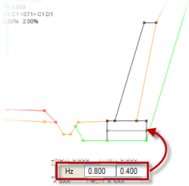Duvar pabucunun toplam kalınlığı.
Metin kutusunun yanında donatılı kalınlığı tanımlamak için ikinci bir kutu bulunur. Bu değer tanımlanırsa, donatılı kalınlığa kadar olan kısım DUVAR PABUCU olarak, alt kısım ise PABUÇ ALTI olarak metrajlandırılır.
Duvar pabucu terasman yüzeyi ile çakıştığında, terasman yüzeyi duvar pabucunun üzerinden geçirilir.
Aynı şekilde, eğer dolgunun konumu [ETEKTE SABİT] ise,
duvar hendekten veya kayadan itibaren yerleştirilir ve şevler duvar kretinden arazi yüzeyine kadar çizilir. Aksine, konum [BAŞTA SABİT] ise, duvar şevlerin üzerine yerleştirilir.
|
Hdl
|
Grobeton kalınlığı
|
Duvar pabucunun altına bir grobeton kalınlığı belirtir. |
Ai, Ae
|
Duvar topuklarının genişliği
|
İç (Ai) ve dış (Ae) topuk genişliği.
Ai ve Ae'nin yanında, programı toplam genişliği (Ai + Taban + Ae) korumaya zorlayan kutucuklar bulunur. Eğer sadece biri işaretlenirse, bu toplam genişliği korumak için işaretlenen genişlik değişir. Eğer her ikisi de aynı anda işaretlenirse, her iki genişlik de nominal değerlerine orantılı olarak değişir.
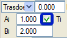Pabuç toplam genişliğini koru:
Krette bir Genişlik ve Ai ile Ae pabuç payları ile tanımlanmış bir duvar için, bu seçenek etkinleştirilebilir. Bu, Ai+Genişlik+Ae genişliğinin korunmasını sağlar. Duvar yükseldikçe ve sırt ile iç yüz şevlerine bağlı olarak duvar tabanı genişler, bu durum Ai ve/veya Ae azaltılarak telafi edilir.
|
Ti, Te
|
Kazı şevleri
|
Duvarın iç (Ti) ve dış (Te) kazı (ve dolgu) şevlerini tanımlar.
Ti altında, toprakarme duvarlarda arazi altındaki iç kazı için ikinci bir şev tanımlamak için bir kutucuk bulunur.
|
Bi, Be
|
Kazı payları
|
Pabucun her iki tarafında, iç (Bi) ve dış (Be) kazı paylarını tanımlar.
Negatif değerler verilirse, şev alt köşe yerine pabucun üst köşesinden başlar.
Eğer herhangi bir pay vermek istemiyor, ancak şevi pabucun üst köşesinden başlatmak istiyorsak, Be kutusuna -0.001 değerini gireriz.
Duvar Pabucu Kazısı: Duvar pabucunun dış kazı payı değeri Be = -1000 değerini kabul eder. Bu durumda, herhangi bir negatif değerde olduğu gibi, payın pabucun üst köşesinden uygulandığı anlamına gelir. -1000 değeriyle pay 0'dır, ancak bu durumda pabucun tüm dış kısmı, Te şevinin üst köşeden pabuç tabanına kadar uzatılmasıyla kesilir.
Dolgu istinat duvarının pabucu arazinin üzerinde kaldığında,
dolgu, duvar pabucu kazısının teorik tabanının dış kenarına (Be) kadar uzatılır ve bu noktadan
itibaren tanımlanan dolgu şevi araziyi kesene kadar çizilir.
(Unutmayın ki Be negatif olabilir ve bu durumda dolgu pabucun üst
kısmına kadar yapılır).
Di, duvar yüksekliğinin bir yüzdesi olarak kullanıldığında, bu seçeneğin yanındaki kutucuk işaretlenerek Di değerinin Bi'de belirtilen miktar kadar artırılması sağlanabilir.
|
Di
|
Sırta olan mesafe
|
Sırta olan mesafeyi tanımlar. Eğer bu değer Ai'den büyükse, kazı ve toprak dolgusu bu mesafe kullanılarak yapılır.
Bu seçeneğin yanındaki kutucuk işaretlenirse, metin kutusunda belirtilen değer duvar yüksekliğinin bir yüzdesi olarak alınır.
|
[ ] Düşey Pabuç
|
Pabuç sırtı düşey
|
Bu kutucuk işaretlenirse, anroşman tipi bir duvar için taban eğimli olsa bile pabuç sırtının düşey olması sağlanır.
|
d0, d1, d2, d3, Ht
|
Pabuç dişinin boyutları
|
Pabuç dişinin boyutlarını tanımlar.
|
Ps%
|
Taban eğimi
|
Anroşman durumlarında, tabanın enine eğimini yüzde olarak tanımlar.
|
Oto
|
Tablodan otomatik duvar
|
Consultar la sección Duvar Tabloları bölümüne bakınız. |
Sabit Yükseklik
|
Sabit yükseklikte duvar
|
Belirli bir yüksekliğe sahip bir duvarın, derinliği belirtilenden daha fazla olmak zorunda kalsa bile yüksekliğini korumasını sağlar.
|
Filtre a, h, t
|
Filtre boyutları
|
Filtre boyutları: taban genişliği (a), tabanından pabuca kadar olan yükseklik (h) ve şev
(t).
|
Hc2
|
Sırt şevinin başlangıcı
|
Dolgu sonu ile sırt şevinin başlangıcı arasındaki mesafeyi tanımlar.
Bu bölümdeki etkinleştirilebilir kutucuk, farklı duvar ve taban genişlikleri tanımlandığında sırt şevi yerine bir basamak oluşturulmasını sağlar.
|
HRE
|
Pabucun dış dolgu yüksekliği
|
Duvar pabucunun dış dolgusunun maksimum yüksekliğini, pabucun üst kısmından ölçülerek tanımlamayı sağlar.
Yanındaki kutucuk, pabucun dış kazısını DOLDURMAMAYI zorlar. Klasik menüde bu kutucuk Te alanının yanında bulunur.
|
Pz%
|
Pabucun üst yüzey eğimi
|
Duvar pabucunun üst yüzeyi için yüzde olarak bir eğim tanımlar.
|
Gt
|
|
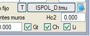Eğer tanımlanmışsa, duvar filtresinin arkasına bir geotekstil tabakası yerleştirir.
|
Ch
|
|
Duvarın görünen yüzünün kaplaması.
|
Li
|
|
Duvar sırtı ve pabucun o tarafı için su yalıtım membranı.
Bu üç elemanın enkesitteki uzunluğu ve eksen boyunca kısmi ve kümülatif alanı ölçülür. BIM'de eksene bağlı yüzeysel elemanlar olarak oluşturulurlar.
|
G.K.
|
|
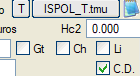Duvar bir dolgunun ortasındaysa, başlangıcında ve sonunda geçiş konisi oluşturur.
Istram revizyonuyla birlikte kurulan Estructura_Doble.isa örneğinde, eksen 2'ye, sol taraftaki dolgu istinat duvarının bu seçeneği kullandığı bir tip kesit (4) eklenmiştir.
|
| Pc% | Kret eğimi | Duvar için kret eğimini % olarak tanımlar. | | Boşluk |
| Yarma iksa duvarlarındakine benzer bir boşluk oluşturur. Sanat Yapılarının geçişine izin vermek için kullanışlıdır. |
Duvar Tabloları
[T] düğmesi, yan tarafında belirtilen kütüphaneden bir duvar tablosu yüklemeyi sağlar (uzantısı .tmu olan dosyalar, varsayılan olarak ISPOL_TD4.tmu). Bu tablolarda, duvarları tanımlamak için bir dizi parametre önceden yapılandırılabilir. Tablodan bir duvar seçildiğinde, verileri mevcut kesite aktarılır. Her tip kesit ve taraf için farklı bir duvar tablosu seçilebilir. ISPOL_T2.tmu tablosu, her duvar için Bi ve Be değerlerini tanımlamayı sağlar.
Hem yarma hem de dolgu için geçerli olan ISPOL_TD4.tmu tablosu, bize ya sırt şevini ya da her duvarın taban genişliğini tanımlama imkanı verir. Sırt/Taban sütununa değer yazılır ve son sütun olan 0=Şev/1=Taban sütununda ne olduğu belirtilir. Bu tabloda taban genişliği kullanılır.
Eğer Oto kutucuğu işaretliyse, program seçilen .tmu tablosunda, yüksekliği-derinliği kesitin kenarından zemine olan yükseklikten büyük olan ilk duvarı arar. Tabloda duvarlar artan yüksekliğe göre sıralanmalıdır. Duvar tablosunda AMT ve ZMT için 0'dan farklı değerler girilirse, ilgili otomatik duvar için tablodaki değerler kullanılır. Eğer tablodaki AMT ve ZMT değerleri 0.0 ise, dolgu istinat duvarı menüsünde girilen sabit değerler kullanılır.
Yüklediğimiz tabloyu  simgesi ile düzenleyebiliriz. simgesi ile düzenleyebiliriz.
Sabit Yükseklikte Duvarlar
Sabit Yükseklik seçeneği, belirli bir yüksekliğe sahip bir duvarın, derinliği belirtilenden daha fazla olmak zorunda kalsa bile yüksekliğini korumasını sağlar.
Toprakarme Duvarı
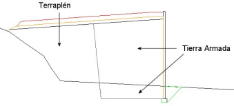Toprakarme duvarlar için (Di > Ai), program aşağıdaki gibi çalışır:
- Pabuç kazı çizgisi, terasmana veya seçilmiş zemine kadar yükseltilir.
- Toprakarme metrajı elde edilir.
- Sağlam zemin üzerindeki toprakarme kısmı dolgudan düşülür.
- Sağlam zemin altındaki toprakarme kısmı duvar pabucu dolgusundan düşülür.
Bu toprakarme duvarları tanımlayabilmek için kazının platformun diğer tarafına, hatta kesit dışındaki araziyi kesecek kadar geçmesine izin verilir. Ayrıca dolgu kesitinde her iki tarafta da kazıları birbiriyle kesişen bir toprakarme duvar tanımlanabilir.
Duvarın iç dolgu şevi Ti'yi tanımlamanın yanı sıra, arazi altındaki kazı için ikinci bir şev de tanımlanabilir.
Anroşman Duvarı
 Anroşman bölgesi için, aşağıdaki parametrelere sıfırdan farklı değerler atanarak bir geometri tanımlanabilir: Anroşman bölgesi için, aşağıdaki parametrelere sıfırdan farklı değerler atanarak bir geometri tanımlanabilir:
- Pabuç tabanının eğimi (Ps%).
- Pabuç topuğundaki yükseklik (Derinlik).
Anroşman pabucunun yüksekliği belirli bir derinlikte olabilir ve duvar filtresi (şemadaki yeşil çizgi) pabuç üst kotuna kadar indirilir.
- Pabuç topuğunun genişliği (Ae).
Düşey Pabuç seçeneği, taban eğimli olsa bile pabuç sırtının düşey olmasını zorlar.
Sıfır veya negatif sırt şevine sahip anroşmanlarda, pabuç kazısı için bir iç şev tanımlanmasına izin verilir.
Özel bir dolgu eteği anroşmanı tipi vardır ve şu şekilde inşa edilir:
- Teorik dolgu eteğinden itibaren Hz derinliğinde, Te şeviyle içeri doğru inilerek kazı yapılır.
Bu kazının tabanı Ai genişliğindedir ve iç taraftan Ti şeviyle araziye doğru kapatılır.
- Bu noktadan anroşman, dolgu şevini kesene kadar bir şevle (sırt) yükselir ve buradan itibaren teorik dolgu eteğinden şev alanında girilen bir şevle yükselen bir çizgiyi kesene kadar yatay olarak devam eder.
Bu anroşmanın oluşturulması için, yükseklik ve genişlik değerleri 0 olmalı ve Hz'ye 0'dan büyük bir değer verilmesi gereklidir.
Ayrıca anroşmanlar için bir iç fazla kazı tanımlamak da mümkündür. Bunun için Bi'ye 0'dan büyük değerler vermek ve Ti şevinin sırt şevinden büyük olması yeterlidir.
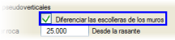Varsayılan olarak, program duvar ve duvar pabuçlarının metrajlarını anroşman ve anroşman tabanlarından ayırmaz. Bu ayrımı etkinleştirmek isteniyorsa, Boykesit'in PARAMETRELER menüsündeki Anroşmanları duvarlardan ayır seçeneğini etkinleştirmek gerekir.
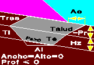Dolgu eteklerini korumak için başka bir anroşman tipi:
Bu da Yükseklik=Genişlik=0 ve Hz>0 olduğunda etkinleşir. Ancak bu durumda bir -Derinlik tanımlanmalıdır (Bitkisel toprak kalınlığına eşit olabilir). Geometrisi Ai ve Ae genişlikleri; Şev, Sırt, Ti ve Te şevleri; ve -Derinlik ile Hz yükseklikleri ile tanımlanır. Taban, Ps%'ye 0'dan farklı bir değer girilerek yatay veya araziye paralel olabilir.
Yeşil Duvar
 Dolgu istinat duvarı tanımında, duvar yüksekliğini tanımlamak için üç seçenek vardır: Dolgu istinat duvarı tanımında, duvar yüksekliğini tanımlamak için üç seçenek vardır:
- Yükseklik:
Duvarın yüksekliği.
- Kot:
Sabit kotlu duvar.
- Y.D.K.: Sabit kotlu yeşil duvar
Yeşil duvar seçeneği seçildiğinde, tanımına yardımcı olan yeni bir model belirir.
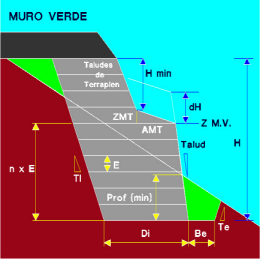Palye'ye kadar olan geometri bu menüde, palyenin üzerindeki şevler ise dolgu sekmesinde tanımlanır. Yeşil duvar malzemesi ayrıca toprakarme olarak da metrajlandırılır.
Bu duvarı yapılandırmak için yeni parametreler tanımlamak gerekir:
- Kazının dibine kadar olan duvar yüksekliği (E), bu değerin tam katı olmalıdır. Bu nedenle verilen derinlik minimum bir derinliktir.
- Minimum yükseklik (Hmin), eğer dolgu yüksekliği bu değerden düşükse yeşil duvar yerleştirilmez.
Yeşil duvar dolgusunun Di genişliği, sabit bir değer olarak, duvar tabanından terasmana kadar olan toplam yüksekliğin bir yüzdesi olarak (%H) veya dolgu yüksekliği hariç duvar yüksekliğinin bir yüzdesi olarak (%Hduvar) verilebilir.
Bir dH değeri tanımlanabilir; öyle ki, eğer yeşil duvar kotu (Y.D.K.) arazinin altında kalırsa, bu kot arazi kotunu geçene kadar dH'nin katları kadar artırılır ve duvar bu yeni kotla yapılmaya çalışılır.
Ayrıca, ilgili kutucuk işaretlenerek, toprakarme dolgunun sadece duvar kret kotuna kadar (ve oradan yukarısı dolgu ile) yapılmasını istediğimizi belirtebiliriz.
Duvar Taban Kotu
Yarma iksa duvarı için taban kotu durumunda olduğu gibi, dolgu istinat duvarı da aynı imkanı destekler.
Duvar Taban Kotu sabitlendiğinde ve tablodan bir duvar seçildiğinde veya otomatik bırakıldığında; ve ayrıca Sabit Yükseklik işaretlendiğinde: Eğer duvar bu durumda gerekenden daha uzunsa, duvar tabanı indirilmez, bunun yerine sabitlenen yüksekliği elde etmek için kret yükseltilir.
Kazıklar
Duvar pabucunun altına kazık ekleme imkanı vardır.
Kazıklar kutucuğu etkinleştirilerek,
bunlar çap, uzunluk, soket mesafesi, kazıklar arası minimum pay ve
duvarın başlangıcı ile ilk kazık arasındaki başlangıç mesafesi ile tanımlanabilir.
Eğer duvarın başlangıcı ile ilk kazık arasındaki başlangıç mesafesi için sıfır değeri atanırsa, bunlar
her bir kazık çifti arasındaki minimum paya uyarak tüm duvar boyunca dağıtılır. Eğer pozitif bir değer atanırsa, ilk kazık
bu değerden itibaren yerleştirilir ve kazıklar sığdığı sürece tam pay kullanılarak devam edilir.
Enine yönde iki sıraya kadar kazık tanımlanabilir,
aralarındaki mesafe verilerek. Ayrıca iç ve dış kazık için bir düşey
açı tanımlamak da mümkündür.
Planda çizim için, Boykesit/Çizimler/.lil Düzenle > Bordürler, Döşemeler... menüsünde Duvar Pabucu Kazıkları seçeneğini etkinleştirmeliyiz.
Kazık perdeleri ile inşa edilmiş duvarlar veya duvar + döşeme içeren bir eksenin planını çizdiğimizde veya BIM modelini oluşturduğumuzda (orta refüjde de), her eksen için kazıkların merkez koordinatları ve taban kotunu içeren bir pan_pil_n.top dosyası oluşturulur.
|